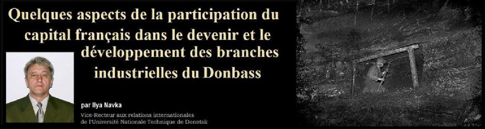
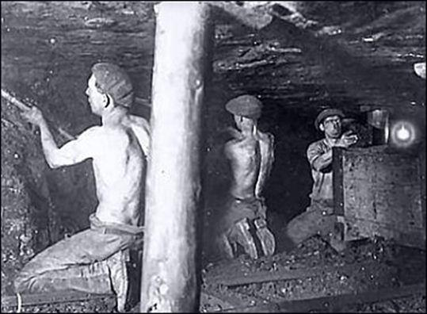
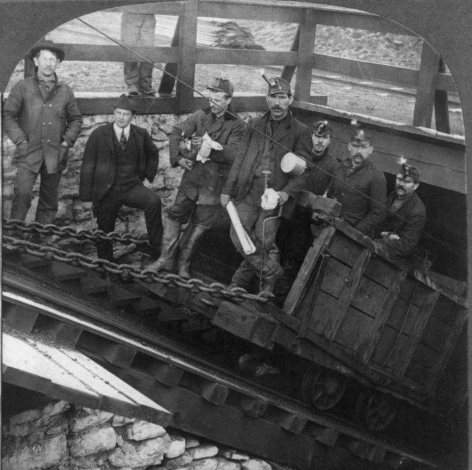
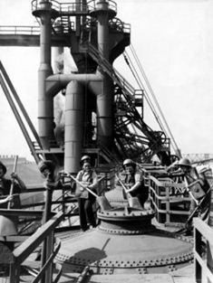
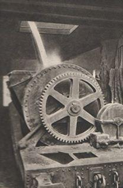

Quelques aspects de la participation du capital français dans le devenir et le développement des branches industrielles du Donbass
par Ilya NAVKA

Le Donbass est une région unique dans beaucoup de sens.
Sur le plan du développement industriel, le Donbass a cela d’exceptionnel que la région est passée tout de suite à l'étape industrielle sans passer par l'étape préindustrielle. Cette révolution industrielle a alors permis l’affluence de capitaux étrangers, notamment du capital français.
La participation des Français dans le destin du Donbass a commencé par les invitation faite par le manufacturier de Russie Démidov A.N. au professeur de l’École des Mines de Paris Monsieur Le Plé, qui va être à l’origine d’une expédition de recherches scientifiques. Cette expédition a duré pendant plus de deux ans – de 1837 à 1839. Les résultats de ses recherches ont fait l’objet d’une publication [1] dans laquelle était présentée l’analyse profonde scientifique, topographique, géologique et chimique de l’état des lieux relatif au charbon du bassin de Donetz. Bien qu’une partie du diagnostic provoqua des doutes et une vive critique, la partie principale – celle des recherches scientifiques – a été reconnue comme un travail fondamental.
Comme l’auteur le souligne, l’extraction charbonnière de cette période était effectuée à l’aide des petites mines au diamètre d’environ 1 mètre et à la profondeur de 12 à 15 mètres. Le plus souvent l’extraction était exécutée au temps hivernal. Les instruments utilisés étaient : la pelle, le pic, le serin, le marteau, le treuil de mains et la corde avec le panier pour le levage du charbon. Les conditions de travail dans la période antérieure aux réformes étaient effrayantes.
Voilà comment les caractérisait l’un des contemporains de Le Plé – l’ingénieur allemand des mines Felkter :
« L’humidité, le vent et le gel – voilà ces trois éléments contre lesquels leur santé doit lutter. À vrai dire, il faut avouer que seule la nature russe sans gémissements et sans reproche, sans plainte et sans murmure peut supporter ces infortunes. Peut-être est-ce pourquoi les ouvriers russes n’ont pas, à cause de l’habitude, su s’entourer de règlement les protégeant. Ils ont perdu la prise de conscience du danger, et se versant un bon petit verre de vodka dans leur gorge, avec un chant gai, sur le vieux câble – ils descendent dans la mine couverte de glace, alors que du point de vue de l’Allemand , celle-ci ressemble plus à un vrai tombeau. » [2]
Après la réalisation de la réforme d’État en Russie et l’annulation du droit servage, la situation au Donbass a commencé à changer dynamiquement. En 1866, le gouvernement a accordé au prince Kotchubey la concession de la construction de l’usine pour la fabrication des rails de fer en matériaux du pays. Mais les circonstances ont fait que Kotchubey a du abandonner ses droits à l’ingénieur gallois John Hughes, qui, en avril de 1869, a conclu avec le gouvernement tsariste « Le Traité pour la formation de la société de Nouvelle Russie de la production houillère de fer et de la société de la branche des chemins de fer de la ligne Kharkov – Azov. »
L’usine métallurgique fondée par cette société a donné l’origine de la ville Iouzovka (Donetsk) [3].
En septembre 1871, on a commencé la construction d’une grosse mine de deux puits nommée « La mine de Korsoune N° 1». « La Société de l’industrie de houille de la Russie de Sud », une grande société anonyme de la région centrale de Donbass, s’occupait de sa construction. En janvier de 1874 « La mine de Korsoune N° 1 » a été mise en exploitation. En 1879 déjà c’était une grande entreprise où on extrayait 5 millions pouds par an et où plus de 1000 personnes travaillaient.
Vers la fin du XIXe siècle les principaux possesseurs de ses actions étaient les représentants du capital français. Ils ont élevé le capital à 4 millions de roubles et ont réalisé l’acquisition de plusieurs hectares et ont construit des mines nouvelles [4].
En 1873 avec la participation de la Société Générale Française, il a été institué la société industrielle et des mines de la Société Anonyme Française qui ont loué les sols aux gisements riches de charbon des frères Routchenkov et qui ont acquis le domaine Kourakhovka. En 1875, selon la décision du gouvernement de Russie, cette société a été autorisée à exploiter le charbon issu de ces terrains.
Plus tard, selon l’opinion de Chtcherbinina O.V. [5], la création des sociétés et l’institution de nouvelles entreprises ont été liées au caractère cyclique du développement de l’économie.
L’auteur choisit quatre périodes :
La première : 1873-1889 – pour compte des capitaux français, belges et anglais , période durant laquelle 6 sociétés ont été créées.
La deuxième : 1890-1899 – le développement exponentiel dont les Français et les Belges sont les leaders. Durant cette décennie, 16 sociétés anonymes de houille furent instituées.
La troisième : 1900-1903 – le temps de la crise économique. Pourtant cela n’a pas arrêté les investisseurs belges qui ont, durant ces trois années, créé 4 nouvelles sociétés.
La quatrième : 1904-1914. La période de l’activité du capital suisse.
En somme de 1873 à 1914 dans la région 29 sociétés anonymes fonctionnaient dont 16 étaient françaises. Avec cela leur part constituait 64.2 % de la somme totale des capitals-actions et des capitaux de l’obligation.
Mais les investissements français ne se manifestaient pas que dans la branche charbonnière.
Ainsi, au début des années 1890, la société anonyme franco-belge a commencé la construction d’une usine mécanique tout près de la station Débaltsévo. En 1894 l’entreprise fut mise en service et produisait les formes de construction, les volées des petits ponts de chemins de fer, les wagonnets pour les voies étroites.
En 1899 la société de production de la sidérurgie et d’aciérie, instituée par les capitalistes français, a commencé la construction d’une fonderie afin de traiter la fonte et l’acier tout près de la station Droujkovka. Les premiers hauts fourneaux débutèrent leur activité en mai 1894. Le produit principal était la production de rails.
En 1899 « La Société Générale des hauts fourneaux et des aciéries de Russie » (la firme « Union » à Paris) a terminé la construction de l’usine métallurgique « Union » avec le haut fourneau et les deux fours Martin près de Makéévka.
Il est à noter que bien qu’ayant le rôle principal dans la production de l’acier et de la fonte, le complexe du Sud de Russie ne comprenait que 22 usines métallurgiques alors qu’en Russie, à cette même période, on comptait 167 usines. Néanmoins les usines du Sud de la Russie fondaient la fonte en moyenne 14 fois plus que celles d’Oural, et le rendement du travail était 5 fois plus important.
Sur ce dernier point, relatif au haut rendement de production, nous comprenons que cela est lié à la mise en application de technologies nouvelles et à la formation des cadres capables d’assimiler cette technique nouvelle et de la conduire. Dans l’exposition du musée de l’une des entreprises de constructions mécaniques on a noté le fait de la surprise extraordinaire de l’ingénieur belge qui, en arrivant à l’usine, a remarqué que plusieurs ouvriers pouvaient non seulement lire les dessins techniques, mais aussi les améliorer.
C’était en l’an 1904. Le salaire à la journée des ouvriers houillers qualifiés a dépassé les 2 roubles, celui des métallurgistes était encore plus haut. La plupart des ouvriers ont déménagé des huttes dans des maisonnettes et des appartements.
Ils avaient les costumes de sortie, une paire de chaussures convenables et, durant leur jour de repos, ils pouvaient se permettre de visiter les tavernes, le cinéma et certains – les théâtres et les bibliothèques.
La Russie était assurément parmi les plus grandes puissances industrielles. Leurs adversaires travaillaient avec intensité pour trouver les moyens et les procédés d’arrêter ce processus. Vers le début du XXe siècle, pareillement à l’appui des méthodes de la terreur individuelle, il a été mis en œuvre un nouveau moyen de grande efficacité : l’exportation de la révolution…
Mais c’est un tout autre sujet…
I.N.
Bibliographie
1. Le-Play. Exploration des terrains carbonifères du Donetz, exécutée de 1837 à 1839 sous la direction de M. Anatole de Demidoff, Paris, v. IV, 1842.
2. Фоминъ П. И. Горная и горнозаводская промышленность юга России, Х: Типогр. Б. Бенгисъ, Т.1, 1915.
3. Гайдук В. А., Ляшенко В. Г., Мозговой В. И., Навка И. П. Юз и Юзовка, Донецк, 2000.
4. Амигуд М. Л., Ройтер А. М. Проблемы развития акционерных и других форм предпринимательства (статьи,очерки, эссе), Донецк, ИЭПИ НАН Украны, Юго-Восток, 1999.
5. Щербинина О. В. Іноземні капітали у вільній та металургійній промисловості Донбасу та Придніпров’я (1861-1914), Донецьк, ТОВ «Юго-Восток, лтд.», 2006.
Partager cette page